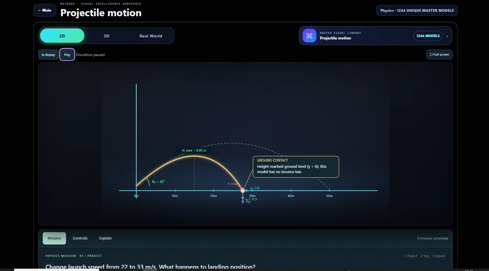
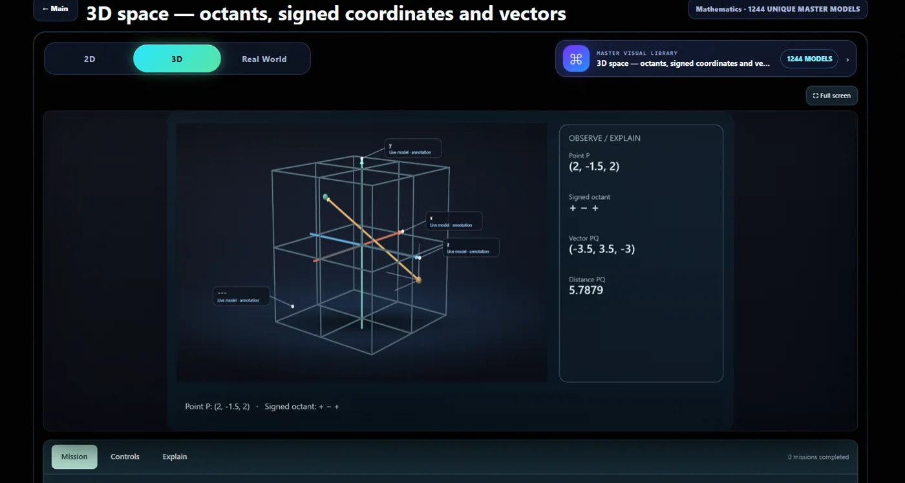

I'm Mann Patel, a technology enthusiast interested in artificial intelligence, automation and website development.
I enjoy learning by building — experimenting with AI tools, connecting applications, developing websites and exploring new ways to solve problems through technology.
I'm continuously learning, experimenting and improving through real projects.
I enjoy experimenting with emerging technologies, understanding how systems work and turning concepts into practical digital solutions.
01 — ARTIFICIAL INTELLIGENCE✳
Intelligence, explored.
Exploring AI models, AI-powered applications and intelligent systems.
AI assistants and agents
Educational AI applications
Practical generative AI
01
02 — AI AUTOMATION⌘
Systems that work.
Connecting tools, applications and AI models to build useful automated workflows.
n8n workflow automation
AI agents and API integrations
Automated business processes
Intelligent application workflows
02
03 — WEBSITE DEVELOPMENT↗
Digital, with purpose.
Building modern, responsive and visually engaging websites.
Website design and development
Interactive user experiences
Responsive frontend interfaces
AI-assisted website creation
03
01 / CURIOSITYMP02 / EXECUTION
THE PHILOSOPHY / 01
THE IDEA IS ONLY THE BEGINNING.
Understand it. Explore it. Build it.
A STORY IN TECHNOLOGY & CURIOSITY ◆ MANN PATEL
01 / 03 — IN MOTION
III.PROJECTSMY PROJECTS
SELECTED WORK.
✳
Selected projects in education, automation, and web development.
SCROLL TO EXPLORE ↓
001 / LIVE PRODUCTFOUNDED BY MANN PATEL
LIVE EDUCATION PRODUCT
MATHGEM.
Making the invisible visible.
MathGem is an AI-powered educational technology project exploring how artificial intelligence can make mathematics, physics, chemistry and STEM learning more accessible and interactive.
mathgem.in / interactive learningMATHGEM / LIVE PRODUCT

01 / 05Projectile motionA LOOK INSIDE MATHGEM
DISCIPLINESMathematics / Physics / Chemistry
EXPERIENCEInteractive science & visual learning
PROJECT TYPEFounder-led educational technology
IV.WEBSITE ART DIRECTIONDIGITAL PRODUCT STUDIES
WEBSITE DEVELOPMENT
NOT JUST WEBSITES.
I also design websites. These are independent explorations in AI products, automation and interactive learning.
SIGNAL / AIINTERFACE STUDY
S●
WORKSPACE 001Intelligence with clarity.ASSISTANTS / SYSTEMS / DESIGN
WEBSITE STUDY / 01DESIGNED BY MANN PATEL
FLOWSTATE / AUTOMATIONPROCESS STUDY · 02
AN IDEA MOVING THROUGH A SYSTEM
01 TRIGGER02 SELECT03 AI BRIEF04 GENERATE07 PUBLISH
FACEBOOKINSTAGRAMLINKEDIN
MATHGEM / INTERACTIVE STEMMATHGEM / INTERFACE
mathgem.in / interactive visualisation

MATHEMATICS · PHYSICS · CHEMISTRY
MANN PATEL / WEB DEVELOPMENTAI · AUTOMATION · INTERACTIVE LEARNING
01 / 03 — AI INTERFACE
THINK IN SYSTEMS.
An AI workspace designed to make complex tasks feel simple.
THREE WEBSITE STUDIES
01 — 03 / SELECTED WORK
SELECTED WEBSITES
Three different directions. Each one built to be explored.
SIGNAL / AIWORKSPACE · 001
S
THINKING SPACE / INTERFACES
SIGNAL / AIINTELLIGENCE. DESIGNED.MENU ☰
EST. MMXXVIIDEAS BECOME INTERFACES.A WORKSPACE FOR IDEAS
01 / WEBSITE STUDY
SIGNAL / AI
AI workspace · interface design
VIEW WEBSITE ↗
FLOWSTATEWORKFLOW / SYSTEM
TRIGGERAI AGENTPUBLISH
DESIGNCONNECTDELIVER
FLOWSTATELAUNCH ↗
CONNECTED SYSTEMS / CLEAR LOGICAutomationWorkflows with momentum.
TRIGGERSAGENTSINTEGRATIONS
02 / WEBSITE STUDY
FLOWSTATE AUTOMATION
Automation platform · interactive design
VIEW WEBSITE ↗
M A T H G E MSTUDIO [01]
INTERACTIVE LEARNING / STEM VISUALS
Learning with presence.
EXPLORE THE EXPERIENCE ↗
03 / WEBSITE STUDY
MATHGEM STUDIO
EdTech · interactive STEM design
VIEW WEBSITE ↗
INDEPENDENT WEBSITE STUDIES / MANN PATEL
V.INTELLIGENT SYSTEMSBUILT TO DO REAL WORK
FEATURED PROJECT / AUTOMATED MARKETING AGENT
AUTOMATED INTELLIGENCE.
A personal n8n automation project that connects AI tools and APIs to support campaign planning, creative preparation and social publishing across connected platforms.
The workflow starts automatically when a campaign is scheduled.
↗
WORKFLOW ILLUSTRATIONBASED ON MY AUTOMATION PROJECT
AUTOMATION / CASE STUDY
A workflow with purpose.
The workflow brings several repeatable tasks into one place: scheduling, selecting campaigns, preparing creative assets, drafting captions and coordinating publishing to connected social channels.
n8nAI generationStorageSocial publishing
n8n/ AGENT ARCHITECTURE
SYSTEM OVERVIEW
CASE STUDY / AI AUTOMATION
One workflow. Clearly mapped.
THE CAMPAIGN / FROM INPUT TO DELIVERY10 CONNECTED STAGES
01Schedule
02Campaign selector
03AI brief
04Generate visual
05Prepare image
06Caption agent
07Publish router
08 / DESTINATIONFacebook Page
09 / DESTINATIONInstagram Business
10 / DESTINATIONLinkedIn
From one campaign brief to three publishing channels.
AUTOMATED MARKETING / SYSTEM OVERVIEW
VI.CREATIVE EXPLORATIONMATHEMATICS IN MOTION
INTERACTIVE MATHEMATICS
FORM FOLLOWS FEELING.
A small experiment in real-time geometry, motion and light.
STUDY No. 005PARAMETRIC / 03 DIMENSIONSREAL-TIME GEOMETRY
MP — LAB
VII.MY APPROACHBUILD. TEST. IMPROVE.
THE WAY I WORK
LEARN BY DOING.
I believe the best way to learn technology is to build with it, experiment with ideas and continuously improve the results.
Each project is an opportunity to understand a problem, explore different solutions and turn a concept into something useful.
I'm interested in discovering new technologies, developing useful digital products and exploring opportunities across AI, automation and web development.
VIII.THE NEXT CHAPTEROPEN TO NEW IDEAS
GET IN TOUCH
LET'S CONNECT.
Have an idea, a question or a project? I’d like to hear about it.
FIND ME ON
AN EXPERIENCE IN DIGITAL PRODUCTSSIGNAL / AICRAFTED BY MANN PATEL
MANN PATEL / WEBSITE SHOWCASESIGNAL / AIAI / PRODUCT DIRECTION